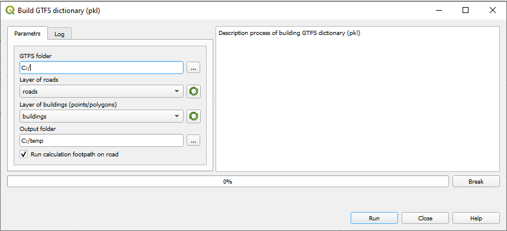

4. Build GTFS dictionary (pkl)¶
Алгоритмы RAPTOR Forward and RAPTOR Backward для вычислений используют предварительно построенные словари, основанные на файлах в формате GTFS. Данные словари сохраняются в формате pkl.
4.1. Предварительная подготовка¶
Необходимо предварительно подготовить следующие данные
GTFS словарь
слой зданий
слой дорог
GTFS словарь необходимо скачать с соответствующего ресурса например https://gtfs.pro/ Слой зданий и слой дорог должны быть загружены в текущий проект QGIS.
4.2. Создание словарей pkl¶
Открыть плагин и выбрать пункт меню Build GTFS dictionary (pkl).

Откроется диалоговое окно выбора настроек параметров.
В окне настроек необходимо указать следующие параметры:
GTFS folder: Выбор папки, в которой расположены файлы GTFS. В папке должны находиться файлы
stops.txt,stop_times.txt,routes.txt,trips.txt,calendar.txt.Layer of roads: Выбор слоя дорог из текущего проекта.
Layer of buildings: Выбор слоя зданий из текущего проекта.
Output folder: Выбор папки для вывода pkl файлов. Необходимо, чтобы были права на запись на данную папку.
Run calculation foothpath on road: Выбор режима расчета foothpath on road. Если режим не выбран, то расчеты расстояний выполняются по воздуху.
Нажмите кнопку Run для запуска процесса формирования словарей GTFS.
В процессе формирования словарей отображается информация о ходе вычислений на вкладке Log, в строке состояния и progressbar.
Процесс вычислений можно прервать, нажав на кнопку Break.
Note
Если выбран режим Run calculation foothpath on road вычисления могут занять много времени. Отображается диалоговое окно c предупреждением.